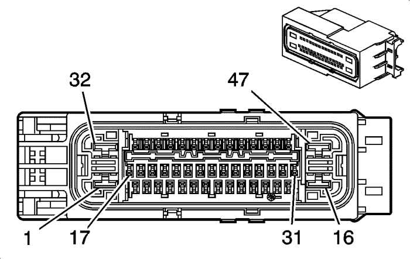

Captiva |
||||||||
|
|
|
|||||||
|
 |
Información de parte de conector
| Información de parte de terminal
|
Bulón | Tamaño | Color | Circuito | Función | Opción |
|---|---|---|---|---|---|
1 | 4.0 | RD/WH | 640 | Voltaje positivo de batería | -- |
2 | -- | -- | -- | No se utiliza | -- |
3 | 0.3 | D-GN/WH | 817 | Señal de velocidad del vehículo | -- |
4-7 | -- | -- | -- | No se utiliza | -- |
8 | 0.3 | L-BU | 5986 | Habilitación de comunicación de datos de serie | -- |
9-10 | -- | -- | -- | No se utiliza | -- |
11 | 0,5 | TN/BK | 2500 | Datos de serie GMLAN de alta velocidad (+) (1) | -- |
12 | 0,5 | TN/BK | 2500 | Datos de serie GMLAN de alta velocidad (+) (1) | -- |
13 | 0,5 | TN | 2501 | Datos de serie GMLAN de alta velocidad (-) (1) | -- |
14 | 0,5 | TN | 2501 | Datos de serie GMLAN de alta velocidad (-) (1) | -- |
15 | -- | -- | -- | No se utiliza | -- |
16 | 4.0 | BK | 50 | Toma de tierra | -- |
17 | -- | -- | -- | No se utiliza | -- |
18 | 0,5 | TN/WH | 6433 | Datos de serie de bus CAN de alta velocidad | -- |
19 | 0,5 | L-GN/BK | 6432 | Datos de serie de bus CAN de baja velocidad | -- |
20-21 | -- | -- | -- | No se utiliza | -- |
22 | 0,5 | GY | 6044 | Referencia de 5 voltios del sensor del ángulo de la dirección | -- |
23-24 | -- | -- | -- | No se utiliza | -- |
25 | 0,5 | L-BU | 6844 | Señal del interruptor de control de descenso de pendientes ABS/TCS | -- |
26 | 0,5 | GY | 6031 | Referencia de 5 voltios del sensor de depresión de freno | -- |
27 | 0,5 | YE/BK | 6032 | Referencia baja del sensor de depresión de freno | -- |
28 | -- | -- | -- | No se utiliza | -- |
29 | 0,5 | OG/BK | 6045 | Referencia de baja tensión del sensor de ángulo de giro | -- |
30-31 | -- | -- | -- | No se utiliza | -- |
32 | 2.0 | RD/WH | 840 | Voltaje positivo de batería | -- |
33 | 0,5 | D-GN | 872 | Señal del sensor de velocidad de la rueda delantera derecha | -- |
34 | 0,5 | GY/WH | 7065 | Tensión de alimentación del sensor de velocidad de la rueda delantera derecha | -- |
35 | 0,5 | BN | 7448 | Control de la bobina de relé de la bomba mecánica de vacío | -- |
36 | 0,5 | GY/BK | 7127 | Tensión de alimentación del sensor de velocidad de la rueda trasera izquierda | -- |
37 | 0,5 | TN | 884 | Señal del sensor de velocidad de la rueda trasera izquierda | -- |
38-40 | -- | -- | -- | No se utiliza | -- |
41 | 0,5 | OG | 6030 | Señal del sensor de depresión de freno | -- |
42 | 0,5 | BN | 882 | Señal del sensor de velocidad de la rueda trasera derecha | -- |
43 | 0,5 | GY/BK | 7128 | Tensión de alimentación del sensor de velocidad de la rueda trasera derecha | -- |
44 | -- | -- | -- | No se utiliza | -- |
45 | 0,5 | GY/WH | 7064 | Tensión de alimentación del sensor de velocidad de la rueda delantera izquierda | -- |
46 | 0,5 | L-BU | 830 | Señal del sensor de velocidad de la rueda delantera izquierda | -- |
47 | -- | -- | -- | No se utiliza | -- |
| © Copyright Chevrolet Europe. All rights reserved |